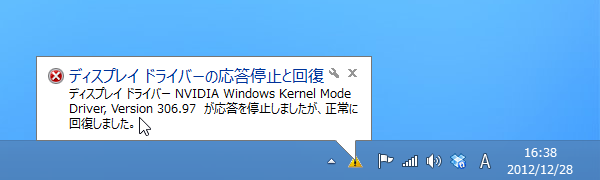

ちゃんとさしましょう。
公開日：

なぜかデスクトップ PC の電源が定期的にシャットダウンされてしまう事象に見舞われる。ケースを開けてみたところ、CPU クーラーがぐらぐらだった。4つある足のうち、2本しかちゃんとささっていない。これでよく今まで動いていたものだ。
ついでにケースの掃除をして、もらったまま放置していた（悲劇はいつも突然に - だるろぐ を参照）グラフィックボードも刺した。ところが――
結局のところ、ドライバーのインストールは関係がなくて、グラフィックボードがちゃんとささっていなかっただけみたい。根元までしっかり挿したら、ちゃんと動いた。

ちょっとだけ速くなった気がする？
追記

標準ドライバーはかなり不安定なので、純正のドライバーへ更新したのだけど、

どうもスリープからの復帰に失敗してドライバーが死ぬ。スリープをオフにし、モニターのみ10分使わなかったら電源を切るという運用でしのぐかな。